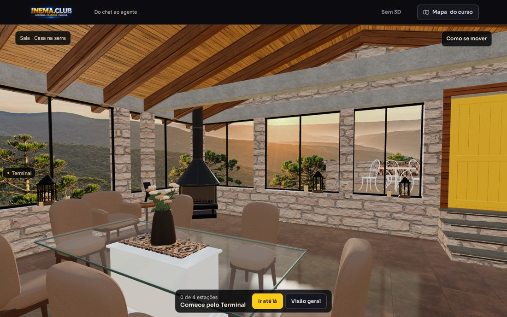

Este projeto mostra como o curso "Do chat ao agente" virou uma casa 3D de pedra e madeira, que abre no navegador. O curso ensina a passar do chat para agentes, IAs que executam tarefas no computador. Ele tem 37 aulas e 23 exercícios, com uma visão geral e 4 partes. Este guia serve para quem cria cursos ou páginas e quer ver um trabalho assim por dentro: os pedidos feitos às IAs, os erros e os números medidos. Para ler, basta o navegador. O curso é grátis, mas os exercícios pedem computador e assinatura do Claude ou do ChatGPT, e alguns usam o terminal, a janela onde se digitam comandos.
Você vê o caminho, não só o resultado
Uma página pronta esconde as tentativas. Este projeto guarda o que foi pedido, o que voltou e o que precisou ser refeito. Os registros publicados foram limpos de caminhos e links internos, por isso alguns pedidos diferem do texto original.
📄 Um curso em lista
As aulas ficam uma embaixo da outra.
Nada no lugar muda quando o aluno termina uma parte.
🏠 O mesmo curso na casa
Cada parte tem uma estação na sala: Terminal (comandos), Jarvis (assistente), Filas (tarefas em ordem) e Redes (conteúdo para redes sociais).
Ao marcar os exercícios de uma parte, a estação liga e um degrau acende. Com as quatro, a porta abre para o terraço.
🧭 Quem fez o quê
Você vê o que ficou com cada IA e o que passou por conferência.
🔎 O que deu errado
As falhas estão listadas, cada uma com a menor correção encontrada.
📏 Quanto consumiu
O tempo de trabalho da IA em cada etapa e o uso da assinatura estão registrados.


Três problemas que este registro ajuda a pensar
Você não precisa querer um site em 3D para aproveitar o que está aqui.
🧗 "A página não muda"
Hoje: o aluno conclui uma parte e o lugar continua igual.
O que olhar aqui: como cada parte virou um sinal visível na sala.
🪞 "A IA disse que ficou pronto"
Hoje: a resposta parece certa, e o erro só aparece na tela.
O que olhar aqui: as imagens da tela em um navegador de verdade e o que voltou para correção.
🧾 "Quanto isso consome?"
Hoje: você começa sem ideia do tamanho do trabalho.
O que olhar aqui: o tempo de cada etapa e quanto do limite semanal da assinatura foi usado. Os números cobrem só a IA que construiu.
Como um erro foi pego
- Uma IA entrega a sala
O código roda e a casa aparece. - Outra IA abre o site em um navegador de verdade
A imagem da tela mostra o forro vermelho, longe da madeira das fotos. - O problema volta como pedido
A etapa seguinte ajusta as cores do forro e das vigas. - Uma nova imagem confere
Ela mostra se o forro chegou perto da foto. O piso precisou voltar em mais de uma etapa.

Pense em uma obra com equipe, mestre e vistoria
Um agente é uma IA que, além de responder, executa tarefas no computador. O Codex, da OpenAI, e o Claude Code, da Anthropic, são agentes que escrevem e alteram arquivos. Aqui, cada um teve um papel. Os revisores independentes são novas sessões de IA, sem as anotações de quem construiu.
🧱 A equipe: Codex
Usou o modelo de IA GPT-6.2 Astra, no nível alto de esforço, em que ele raciocina por mais tempo, e pela assinatura. Trabalhou em 9 rodadas: cada rodada é um pedido executado do início ao fim. Gerou as imagens das superfícies e da paisagem, os textos e o código.
📐 O mestre de obras: Claude Code
Escreveu a descrição do projeto, os pedidos e os testes. Conferiu no navegador e devolveu o que não passava.
🔍 A vistoria: revisores
Usaram o curso como visitantes, sem ver as anotações de quem construiu. Deram uma nota e listaram problemas.
A ordem do trabalho
- O pedido
Nei, do ARCKHÉ, pediu para partir de um evento 3D anterior, a Imersão Jarvis 3D, e recriar a casa de pedra e madeira de um conjunto de fotos, com o conteúdo deste curso. - A base do curso
Aulas e exercícios entram em um arquivo comum às versões com e sem 3D. - Imagens, textos e casa
O Codex cria o ambiente e constrói o curso dentro dele. - Conferência e correção
Imagens da tela e revisões geram as rodadas seguintes. - Fechamento
A última rodada é conferida no site publicado, com clique e teclado reais.


Os números e o que deu errado
Tempo, custo e limite vêm do registro de cada rodada. As notas dos revisores vêm do acompanhamento do projeto, que não foi publicado.
O uso medido do limite semanal da assinatura do Codex passou de 89% para 96%, ou 7 pontos.
Revisor 1: nota 6
Reprovado. Os problemas viraram a rodada 05.
Revisor 2: nota 7
Reprovado. Os problemas viraram a rodada 06.
Revisor 3: nota 7,5
Aprovado, com pontos a ajustar, que viraram a rodada 07. A orientação deste revisor foi mais branda que a das duas primeiras revisões, então a nota não se compara diretamente com as anteriores.
A última rodada foi conferida no site publicado, com clique e teclado reais, sem novo revisor. Os pareceres completos não estão publicados: os pontos apontados aparecem nos pedidos das rodadas 05, 06 e 07.
Alguns erros do caminho
- Forro vermelho e piso vinho
As cores foram ajustadas até se aproximarem das fotos. - Pedra com cara de tijolo pintado, depois de bloco de jogo
A imagem da parede foi refeita a partir das fotos de referência. - Imagem de teste toda preta
A tela era apagada logo depois de desenhada. - Clique preso na mureta
Quem clicava no vão da porta acertava a mureta do terraço. - Aviso antes da hora
A barra de avisos anunciava a chegada à estação quando a pessoa ainda estava a caminho.
A lista de falhas registradas está no GitHub, o site que guarda o código do projeto.
🔎 Confira no GitHub
Pedidos · Respostas de cada rodada · Imagens da tela · Tempo e custo
⚠️ O que ainda não está provado ou pronto
- A fluidez não foi medida em placa de vídeo real nem em celular físico. Os testes simularam os dois no computador.
- Cadeiras, poltrona e pedra vista de perto ainda são simples.
- Não foi medido se a casa faz as pessoas aprenderem ou concluírem mais.
- O curso é grátis, mas os exercícios pedem computador e assinatura do Claude ou do ChatGPT.
Leve a análise para o seu curso
A análise você faz sem programar e sem instalar nada. Construir uma casa assim é outra etapa: pede aprender a usar agentes no computador ou ter ajuda técnica.
1. Abra a sua IA
Use um chat de IA que consiga abrir links. Se ele não abrir o GitHub, copie a parte "Como foi construído" da página do projeto e cole junto.
2. Cole o pedido
Junte o link do curso ou um arquivo dele, como PDF ou apresentação.
3. Decida
Leia o plano e diga sim só ao que fizer sentido.
Leia o projeto "Do Chat ao Agente 3D" em https://github.com/linnoff88-dev/do-chat-ao-agente-3d (comece pelo README e por FALHAS.md) e veja a casa em https://eventos.ARCKHÉ AI/do-chat-ao-agente-3d/. Use esse projeto só como referência. Depois olhe o meu curso ou a minha página (no link ou no arquivo que eu enviar; se você tiver acesso a uma pasta, nela) e me responda em português simples: 1. O que aqui poderia virar lugares ou etapas, com um sinal claro de "pronto"? 2. O que a pessoa veria mudar quando avança? 3. Vale a pena fazer em 3D, ou uma página comum resolve? 4. Como eu conferiria o resultado em um navegador real antes de aprovar? Não mude nada ainda. Mostre o plano e espere eu dizer sim.
🛠️ Quer a parte técnica?
Os arquivos, os testes e o passo a passo completo estão na página inicial do projeto no GitHub.
Antes de você entrar
Consigo fazer uma casa assim sem programar?
A análise, sim. A construção pede aprender a usar agentes, como o Claude Code ou o Codex, ou ter ajuda técnica. Aqui foram 9 rodadas, com testes e revisões.
Preciso programar para ler?
Não. Este guia e a casa abrem no navegador. Alguns exercícios do curso usam o terminal, e a primeira estação ensina esse começo.
O curso é pago?
O curso é grátis. Os exercícios pedem computador e assinatura do Claude ou do ChatGPT.
E se o 3D não abrir?
Há uma versão sem 3D, com o mesmo curso e o mesmo progresso.
Funciona no celular?
A casa tem controles de toque e versão sem 3D, testados em simulação, não em um celular físico. Para fazer os exercícios, você precisa de um computador.
A IA fez tudo sozinha?
Não. Nei, do ARCKHÉ, fez o pedido e deu o OK para publicar. As IAs trabalharam em 9 rodadas, com testes, conferência no navegador e três revisões independentes.
As fotos da casa estão aqui?
Não. Elas serviram só de referência e ficaram fora do site e do repositório.
E no seu curso: o que a pessoa deveria ver mudar quando termina uma parte? O curso está grátis no ARCKHÉ AI, direto na internet.